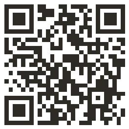

Två fristående appar för tillfrisknande. Ärlighetsinventeringen är den enklare: den handlar om lögner, sanning och ett hållet löfte om dagen. Bevisbanken går djupare: den byter ut beroendets gamla övertygelser om vem du är mot nya beslut, med insamlade bevis som gör dem sanna. Installera den ena, den andra eller båda.
Two separate recovery apps. The Honesty Inventory is the simpler one: it is about lies, truth telling and one kept promise a day. The Proof Bank goes deeper: it replaces the old beliefs your addiction wrote about you with new decisions, backed by collected proof that makes them true. Install one, the other, or both.
Ärlighetsinventeringen bygger på Nathaniel Brandens arbete om självkänslans pelare. Bevisbanken bygger på David Bayers metod för att identifiera och ersätta begränsande övertygelser.
The Honesty Inventory builds on Nathaniel Branden's work on the pillars of self-esteem. The Proof Bank builds on David Bayer's method for identifying and replacing limiting beliefs.
Inga konton. Allt du skriver sparas lokalt på din egen telefon och skickas aldrig till någon server.
No accounts. Everything you write is stored locally on your own phone and never sent to any server.
Ett självreflektionsverktyg om löften till dig själv. A self-reflection tool about the promises you make yourself.
Inventeringen tar 5-7 minuter. Ett löfte om dagen därefter. The inventory takes 5-7 minutes. One promise a day after that.
Beroendet gör två sorters skada som finns kvar när ruset är borta. Det bryter tilliten till det egna ordet: varje ”imorgon slutar jag” som inte höll lärde dig att dina löften väger lätt. Och det skriver en berättelse om vem du är: ”jag förstör alltid”, ”jag går inte att lita på”. Nykterheten stoppar drickandet. Berättelsen skriver den inte om av sig själv. Därför finns två appar, en för varje skada, och varje app får vara enkel.
Addiction does two kinds of damage that outlast the substance. It breaks the trust in your own word: every "tomorrow I'll stop" that didn't hold taught you that your promises weigh nothing. And it writes a story about who you are: "I always ruin things," "I can't be trusted." Sobriety stops the drinking. It does not rewrite the story by itself. So there are two apps, one for each injury, and each app gets to stay simple.
App 1 · Den enklareApp 1 · The simpler one
Handlar om beteende: lögner, sanning och ditt ord till dig själv. Mät självtillit och självrespekt med tjugo konkreta frågor, få en karta i stället för en dom, och bygg sedan kontot: ett litet hållet löfte varje morgon. Här finns också lögnloggen, för det som väger mest när det bärs ensamt.
About behaviour: lies, truth telling and your word to yourself. Measure self-trust and self-respect with twenty concrete questions, get a map rather than a verdict, then build the account: one small kept promise every morning. The lie log lives here too, for what weighs the most when carried alone.
Börja här om ditt ord till dig själv har slutat betyda något, eller om du vill ha en enda ärlig vana om dagen och inget mer.
Start here if your word to yourself has stopped meaning anything, or if you want one honest practice a day and nothing more.
App 2 · Den djupareApp 2 · The deeper one
Handlar om självbilden under beteendet: att släppa gamla övertygelser till förmån för nya, mycket bättre. Skriv den gamla ordagrant, formulera det nya beslutet, och samla sedan bevis: verkliga händelser med datum. Bevisen är det som löser upp den kognitiva dissonansen, så att det nya inte blir en fras utan något du faktiskt bär.
About the self-image underneath the behaviour: letting go of old beliefs in favour of new and far better ones. Write the old one word for word, phrase the new decision, then collect proof: real events with dates. The proof is what dissolves the cognitive dissonance, so the new belief stops being a phrase and becomes something you actually carry.
Börja här om du gör rätt saker men fortfarande känner dig som samma person inuti, eller om en mening som ”jag förstör allt” styr dagen.
Start here if you are doing the right things but still feel like the same person underneath, or if a sentence like "I ruin everything" runs the day.
De fungerar bra ihop: inventeringen håller dig ärlig dag för dag, och Bevisbanken gör den ärligheten till en ny självbild över månader. Men du måste inte ha båda. Varje app installeras för sig, har sin egen data och sin egen säkerhetskopia, och de ser aldrig varandras innehåll.
They work well together: the inventory keeps you honest day to day, and the Proof Bank turns that honesty into a new self-image over months. But you do not need both. Each app installs on its own, keeps its own data and its own backup, and neither can see the other's content.
Fem steg, från mätning till samtalsunderlag. Mockuperna visar fiktiv exempeldata.
Five steps, from measurement to conversation notes. The mockups show fictional sample data.
Steg 1 · InventeringenStep 1 · The inventory
En engångsinventering på 5-7 minuter, en fråga i taget. Tio frågor mäter självtillit: hur ofta små privata löften bryts, skärmen, sömnen, samtalen, ”sista gången”. Tio mäter självrespekt: hur du möter dig själv efteråt, inre dialog, undvikande av sanningen, handling i linje med värderingar.
A one-time inventory of 5-7 minutes, one question at a time. Ten questions measure self-trust: how often small private promises break, the screen, sleep, that conversation, "the last time." Ten measure self-respect: how you meet yourself afterwards, inner dialogue, avoiding the truth, acting in line with your values.
Svarsskala i fem steg, från Aldrig till Nästan alltid. Det går alltid att backa.
A five-step frequency scale, from Never to Almost always. You can always go back.
Del 1 · Dina löften till dig självPart 1 · Your promises to yourself
Jag säger ”det här är sista gången” om något jag vill sluta med, och gör om det ändå. I say "this is the last time" about something I want to stop, and then do it again.
Steg 2 · Din profilStep 2 · Your profile
Två delpoäng, självtillit och självrespekt, placerar dig i en av fyra profiler: Fast mark, Säker hand, sträng röst, Varm röst, löst grepp eller Lågvatten. Varje profil pekar ut var skadan är störst och var styrkan finns, och avslutas med samma första övning: löftesloggen.
Two scores, self-trust and self-respect, place you in one of four profiles: Firm Ground, Steady Hand Stern Voice, Warm Voice Loose Grip, or Low Tide. Each profile points out where the damage is greatest and where the strength remains, and ends with the same first exercise: the promise log.
Resultatet sparas med datum, så att en ominventering kan jämföras senare.
Results are saved with their date, so a retake can be compared later.
Din profilYour profile
Inventering 12 maj 2026Inventory 12 May 2026
Varm röst, löst grepp Warm Voice, Loose Grip
Du behandlar dig själv med en rimlig, ofta varm ton. Skadan sitter i stället i tilliten till ditt eget ord. Det är inte ett karaktärsfel. Det är ett konto som tömts, och konton går att fylla igen. You treat yourself with a reasonable, often warm tone. The damage sits instead in the trust you place in your own word. That is not a character flaw. It's an account that has been emptied, and accounts can be refilled.
Steg 3 · Ett löfte om dagenStep 3 · One promise a day
Kärnan i appen är löftesloggen: ett enda litet löfte per dag, valt ur ett bibliotek med trettio mikrolöften (kropp, ordning, relation, digital, stillhet) eller skrivet med egna ord. Alla är små, binära och vardagsnära: kvällens svar är ett enkelt ja eller nej. Att svara är en del av löftet: ett obesvarat löfte räknas som brutet när dagen passerat.
The core of this app is the promise log: one single small promise per day, picked from a library of thirty micro-promises (body, order, connection, digital, stillness) or written in your own words. All are small, binary and everyday: the evening answer is a simple yes or no. Answering is part of the promise: an unanswered promise counts as broken once the day has passed.
»Ett brutet löfte är information, inte en dom. Vad gjorde det svårt?«
"A broken promise is information, not a verdict. What made it hard?"
Så låter appen vid ett ”nej”. Ingen bestraffande copy: ett anteckningsfält, sedan vidare.
That's the app's voice on a "no." No punishing copy: a note field, then onwards.
Checka inCheck in
12 maj 202612 May 2026
Dagens löfteToday's promise
Telefonen utanför sovrummet i natt. Phone outside the bedroom tonight.
Höll du dagens löfte? Did you keep today's promise?
Steg 4 · Kontot växerStep 4 · The account grows
Översikten visar två räknare: hållna löften i rad och hållna totalt. Bryts en svit nollas raden, men totalen består och lyfts fram. Kontot töms inte av en dålig dag. En 30-dagars färgkarta visar mönstret: hållet, brutet eller ingen incheckning.
The overview shows two counters: promises kept in a row and kept in total. If a run breaks, the row resets, but the total stands, and it's the total the app points to. One bad day doesn't empty the account. A 30-day colour map shows the pattern: kept, broken, or no check-in.
Efter 30 dagar med loggen föreslår appen, lugnt och avvisbart, en ominventering, och visar sedan förra profilen mot den nya, delpoäng sida vid sida.
After 30 days with the log, the app suggests (calmly, dismissibly) retaking the inventory, then shows the old profile against the new one, scores side by side.
ÖversiktOverview
Ditt konto växer.Your account is growing.
Senaste 30 dagarnaLast 30 days
Steg 5 · Till samtaletStep 5 · To the conversation
En textsammanfattning av de senaste 30 dagarna, med inventeringsresultat, löftesstatistik och anteckningar, klar att visa upp, kopiera eller ladda ner inför ett samtal.
A text summary of the last 30 days (inventory results, promise statistics and notes), ready to show, copy or download before a conversation.
Här finns också säkerhetskopian: eftersom all data bara finns på enheten kan du exportera och importera allt som en fil, samt radera allt med ett bekräftelsesteg. Bevisbanken har sin egen fil.
The backup lives here too: since all data exists only on the device, you can export and import everything as a single file, and delete everything with a confirmation step. The Proof Bank has its own file.
Sammanfattning · 30 dagarSummary · 30 days
Metoden kommer från David Bayers arbete med begränsande övertygelser, anpassad för tillfrisknande. Du skriver ner den gamla övertygelsen ordagrant, precis som den låter i huvudet. Du formulerar det nya beslutet i presens, som något som redan är sant. Och sedan gör du det ingen affirmation gör: du samlar bevis, verkliga händelser med datum. Appen börjar med en jämförelse mellan den du är nu och den du var för ett år sedan, så att banken aldrig står tom när du väl ska läsa ur den.
The method comes from David Bayer's work on limiting beliefs, adapted for recovery. You write down the old belief verbatim, exactly as it sounds in your head. You phrase the new decision in the present tense, as something already true. And then you do what no affirmation does: you collect proof, real events with dates. The app opens with a comparison between who you are now and who you were a year ago, so the bank is never empty the first time you read from it.
Steg 1 · ÖvertygelserStep 1 · Beliefs
Varje övertygelse har två rader: den gamla, ordagrant och genomstruken, och det nya beslutet som ersätter den. Ordagrant är viktigt: det är den exakta meningen du ska känna igen när den dyker upp. Ett valfritt kroppsankare beskriver hur det känns när det nya är sant.
Each belief has two lines: the old one, verbatim and struck through, and the new decision that replaces it. Verbatim matters: it is the exact sentence you will recognize when it shows up. An optional body anchor describes how it feels when the new one is true.
Sex kategorier följer med från start, alla redigerbara: Självtillit, Värde jag skapar, Ekonomi och värdighet, Hälsa och styrka, Relationer och attraktion, Mission och mål. Appen föreslår stillsamt att hålla antalet aktiva övertygelser litet: färre beslut ger fler repetitioner per beslut.
Six categories come seeded, all editable: Self-trust, Value I create, Money and dignity, Health and strength, Relationships and attraction, Mission and goals. The app quietly suggests keeping the active list small: fewer decisions means more repetitions per decision.
ÖvertygelserBeliefs
Bevisen gör beslutet sant.The proofs make the decision true.
Jag går inte att lita påI can't be trusted
Jag är en man som håller sitt ord, bevisen finns i bankenI am a man who keeps his word, the proof is in the bank
Rak rygg, lugn andning · SjälvtillitStraight back, calm breath · Self-trust
Jag förstör allt jag rör vidI ruin everything I touch
Det jag bygger nyktert hållerWhat I build sober lasts
Värde jag skaparValue I create
Steg 2 · MorgonritualenStep 2 · The morning ritual
En övertygelse i taget i helskärm, lugnt tempo. Det nya beslutet stort, de senaste bevisen ur banken under, sedan tre lugna andetag: ”Andas. Känn att det är sant.” Ritualen avslutas med dagens löften, ett till tre små åtaganden, och en svit som räknar morgnarna.
One belief at a time, full screen, calm pace. The new decision large, the latest proofs from the bank beneath it, then three slow breaths: "Breathe. Feel that it is true." The ritual ends with today's promises, one to three small commitments, and a streak that counts the mornings.
En valfri ”Läs högt”-markering påminner om att rösten gör repetitionen starkare. Inga poäng, inga märken: bara morgnar i rad.
An optional "Read aloud" marker reminds you that the voice makes the rep stronger. No points, no badges: just mornings in a row.
SjälvtillitSelf-trust
Jag är en man som håller sitt ord, bevisen finns i banken I am a man who keeps his word, the proof is in the bank
Ur bankenFrom the bank
Andas. Känn att det är sant.Breathe. Feel that it is true.
Steg 3 · SnabbfångstStep 3 · Quick catch
Gamla övertygelser dyker inte upp på schema. När en hugger tag under dagen är den nya reflexen två tryck bort: en flytande knapp öppnar listan, ett tryck på den gamla tanken loggar fångsten och visar det nya beslutet i helskärm i fem sekunder, med kroppsankaret. Sedan tillbaka till dagen.
Old beliefs don't show up on schedule. When one strikes during the day, the new reflex is two taps away: a floating button opens the list, one tap on the old thought logs the catch and shows the new decision full screen for five seconds, body anchor included. Then back to the day.
Varje fångst är en repetition: lägg märke till, byt ut, gå vidare. Fångsterna räknas per vecka, och det är nedgången som är målet.
Every catch is a rep: notice, replace, move on. Catches are counted per week, and the decline is the goal.
Fångad. Nu gäller:Caught. This holds now:
Jag är en man som håller sitt ord, bevisen finns i banken I am a man who keeps his word, the proof is in the bank
Rak rygg, lugn andning Straight back, calm breath
Steg 4 · KvällscheckStep 4 · Evening check
Först dagens löften: hållet, delvis eller inte hållet, i neutral ton, med plats för en rad om vad som gjorde det svårt. Sedan en enda fråga: vad hände i dag som bekräftar något av dina beslut? En komplimang, en prestation, en yttre händelse. Grå eller fyllda prickar visar vilka kategorier som fått bevis i dag, utan någon värdering.
First today's promises: kept, partly, or not kept, in neutral language, with room for one line about what made it hard. Then a single question: what happened today that confirms one of your decisions? A compliment, an achievement, an outside event. Grey or filled dots show which categories got proof today, with no judgment attached.
»Ett hållet löfte blir automatiskt ett bevis i Självtillit: din disciplin förvandlas bokstavligen till bevismaterial.«
"A kept promise automatically becomes a proof in Self-trust: your discipline literally turns into evidence."
Det är så loopen sluts: nykter vardag skapar händelserna, kvällen bokför dem, morgonen läser dem.
That is how the loop closes: sober days create the events, the evening records them, the morning reads them.
Dagens bevisToday's proofs
Vad hände i dag som bekräftar något av dina beslut?What happened today that confirms one of your decisions?
Kategorier med bevis i dagCategories with proof today
Steg 5 · Veckan och integreringenStep 5 · The week and integration
Veckoöversikten samlar veckans bevis per kategori, visar löftena som ett enkelt bråk (hållna av totalt, aldrig procent eller poäng) och ritar fångsterna per övertygelse över åtta veckor. Trenden ska nedåt: färre fångster betyder att den gamla övertygelsen tystnar. Bredvid står veckans morgonritualer, så att du kan skilja utsläckning från att du slutat titta.
The weekly review gathers the week's proofs by category, shows the promises as a simple fraction (kept of total, never a percentage or a score) and draws the catches per belief across eight weeks. The trend should point down: fewer catches means the old belief is going quiet. Next to it stand the week's morning rituals, so you can tell extinction apart from having stopped looking.
När ett beslut känns självklart sant markeras det som integrerat och flyttas till ett stilla arkiv, Integrerade beslut, med hela sin bevishistorik. En gång i månaden, avvisbart, frågar appen om något beslut är redo, och om en ny övertygelse vill in. Hela banken kan dessutom skrivas ut som en Bevisbok, alla bevis per kategori.
When a decision feels obviously true, you mark it as integrated and it moves to a quiet archive, Integrated decisions, with its full proof history. Once a month, dismissibly, the app asks whether a decision is ready, and whether a new belief wants in. The whole bank can also be printed as a proof book, all proofs by category.
VeckoöversiktWeek in review
Veckans löftenThe week's promises
2 delvis2 partly
Fångster per övertygelseCatches per belief
Totalt: 34Total: 34
Morgonritualer samma vecka: 6 av 7. Färre fångster över tid kan betyda att den gamla övertygelsen tystnar. Morning rituals the same week: 6 of 7. Fewer catches over time can mean the old belief is going quiet.
Integrerade beslutIntegrated decisions
Det jag bygger nyktert håller What I build sober lasts
Svar, övertygelser och bevis sparas i telefonens lokala databas. Inga konton, ingen analytics, inga tredjepartsskript.
Answers, beliefs and proofs are stored in the phone's local database. No accounts, no analytics, no third-party scripts.
Läggs till på hemskärmen direkt från webbläsaren och fungerar helt offline efter första besöket. De två apparna installeras var för sig och blir två ikoner.
Added to the home screen straight from the browser, and works fully offline after the first visit. The two apps install separately and become two icons.
Appen är gratis, kräver ingen inloggning och indexeras inte av sökmotorer. Utvecklad av Michael inom Mission Phoenix.
The app is free, needs no login, and isn't indexed by search engines. Developed by Michael as part of Mission Phoenix.
Du äger din data: varje app exporterar sin egen fil som kan läsas in igen, till exempel vid telefonbyte. Bevisbanken tar också emot en gammal fil från den tidigare kombinerade appen och plockar då ut bevisdelen.
You own your data: each app exports its own file, which can be imported again when changing phones, for example. The Proof Bank also accepts an old file from the earlier combined app and picks out the proof part.
Hela bevisbanken kan skrivas ut eller sparas som PDF, alla bevis samlade per kategori, redo att bläddra i.
The whole proof bank can be printed or saved as a PDF, all proofs gathered by category, ready to leaf through.
Byggd med React, Vite och Tailwind. Serveras som statiska filer från missionphoenix.life, ingen drift utöver sajten.
Built with React, Vite and Tailwind. Served as static files from missionphoenix.life, with no infrastructure beyond the site.
Välj den app som beskriver ditt problem. Ärlighetsinventeringen börjar med inventeringen (5-7 minuter) och sedan ett löfte om dagen. Bevisbanken börjar med dina första bevis och din första övertygelse. Allt du skriver stannar på din egen enhet och kan raderas när som helst.
Pick the app that names your problem. The Honesty Inventory starts with the inventory (5-7 minutes) and then one promise a day. The Proof Bank starts with your first proofs and your first belief. Everything you write stays on your own device and can be deleted at any time.
Öppna ÄrlighetsinventeringenOpen the Honesty Inventory Öppna BevisbankenOpen the Proof Bank
Skanna med mobilenScan with your phoneiPhone visar ingen egen installationsfråga: stegen görs manuellt via dela-knappen. Installationen är också ett skydd: en app på hemskärmen undantas från Safaris regelbundna rensning av webbplatsdata. Och eftersom all data ligger i appen på enheten gäller: raderas appikonen raderas datan. Kom ihåg säkerhetskopian under fliken Mer.
iPhone shows no install prompt of its own; the steps are done manually via the share button. Installing is also a safeguard: an app on the home screen is exempt from Safari's periodic clearing of website data. And since all data lives in the app on the device: delete the app icon and the data goes with it, so remember the backup under the More tab.